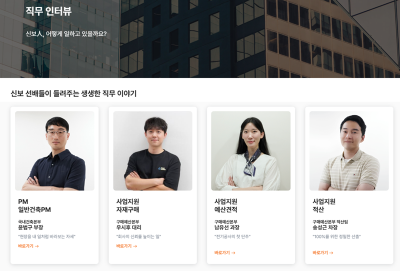
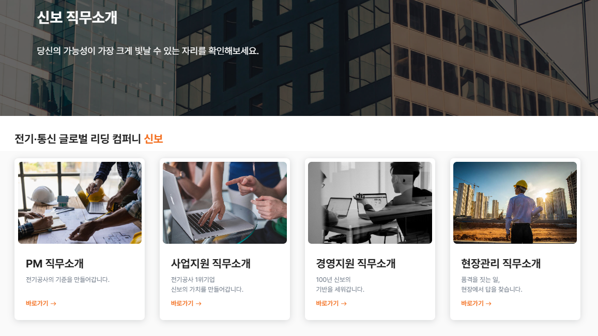

신보그룹이 지원자 여러분께 더 나은 채용 경험을 제공하기 위해 공식 채용 홈페이지를 새롭게 단장했습니다.
이번 리뉴얼은 사용자 친화적인 디자인과 직관적인 정보 탐색에 중점을 두었습니다.
주요 변경 사항
새로운 채용 사이트는 지원자들이 신보의 비전과 가치를 한눈에 파악하고, 보다 쉽고 편리하게 지원 절차를 진행할 수 있도록 사용자 경험(UX/UI)을 대폭 개선했습니다. 또한, 지원 절차를 간소화하여 편의성을 크게 높였습니다.

리뉴얼 핵심 포인트
- 사용자 중심의 직관적인 메뉴 구성 (신보 소개, 채용 공고 등)
- 생생한 직무 정보 제공 (상세 업무, 필요 역량 등)
- 지원자 편의성을 고려한 UX/UI 개선
- 신보의 비전과 가치를 담은 콘텐츠 강화
사내 임직원 여러분께서도 새롭게 바뀐 채용 사이트에 많은 관심을 부탁드리며, 주변의 뛰어난 인재들에게 적극적으로 알려주시어 신보의 미래를 함께 이끌어갈 동료를 맞이하는 데 힘을 보태주시길 바랍니다.